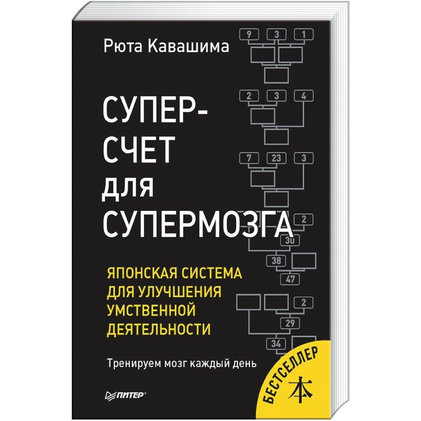

Каталог
Супер счет для супермозга. Новая методика Рюта Кавашима по развитию мозга
Автор: Кавашима Рюта
Серия: Сам себе психолог
Год издания: 2019
Издательство: ИД "Питер"
Книги японского профессора-невролога Рюты Кавашимы пользуются невероятной популярностью во всем мире! И это не удивительно, ведь они помогают достичь великолепных результатов в интеллектуальной деятельности и поддерживать мозг в отличном состоянии до глубокой старости!Мозг, как и мышцы, слабеет без нагрузки. Поэтому так важно каждый день заставлять его работать. 5–10 минут в день вполне достаточно. Упражнения, данные в этой книге, направлены на тренировку префронтальной коры головного мозга, активность которой неразрывно связана с улучшением умственной деятельности и в конечном счете продолжительностью жизни. В этой тетради представлены различные математические примеры, основанные на обычных арифметических действиях. Они стимулируют мозговую деятельность, помогают развить супермозг за достаточно непродолжительный период. Главное в этом деле – регулярность занятий!
Цена: 699 р.